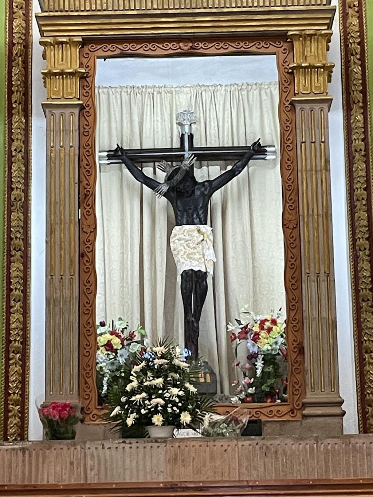
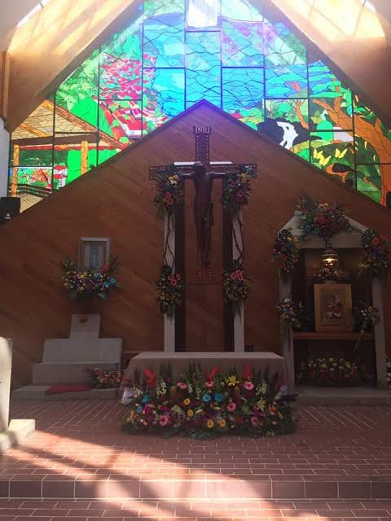
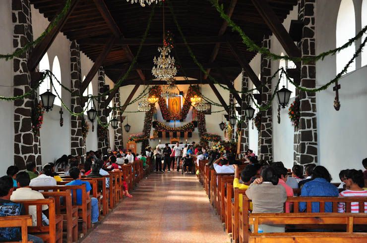
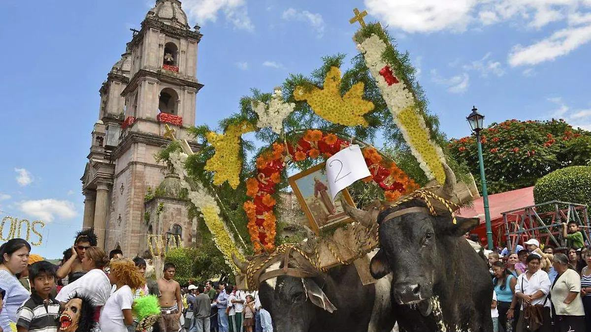

Se celebra en honor al Cristo Negro, una imagen religiosa muy venerada por los habitantes. Hay peregrinaciones, mojigangas, música y fuegos artificiales.

La celebración es en honor a Nuestra Señora de Fátima, cuya festividad religiosa se conmemora el 13 de mayo. En Avándaro existe una iglesia dedicada a esta advocación, ubicada sobre la calle Rosales.

Los habitantes realizan peregrinaciones, misas, mañanitas y celebraciones religiosas en honor a la Virgen de Guadalupe.

Es una de las celebraciones más importantes, ya que San Francisco de Asís es el santo patrono de Valle de Bravo. Se realizan mañanitas, misas, desfiles, concursos de yuntas adornadas con flores y mojigangas.